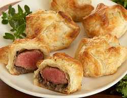
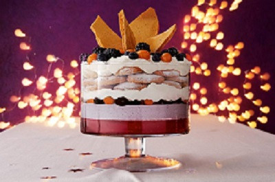
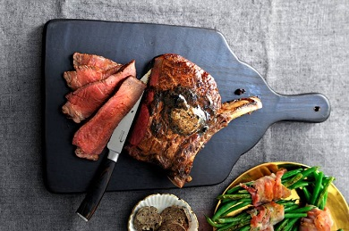

Mini beef wellington
1. Verwarm de oven voor op 220 °C.
2. Dep de ossenhaas droog met keukenpapier en bestrooi met peper en zout. Verhit 15 g boter (per 4 personen) in een koekenpan en bak het vlees in 1 min. rondom bruin. Neem uit de pan en laat afkoelen op een bord.
3. Snijd de champignons en knoflook zeer fijn. Ris de blaadjes van de tijm. Verhit de rest van de boter in een koekenpan en bak de champignons, knoflook en ¾ van de tijm ca. 5 min. op middelhoog vuur tot het vocht is verdampt. Breng op smaak met peper en eventueel zout. Laat goed uitlekken en verdeel over een bord.
4. Leg 2 plakken ham op een stuk vershoudfolie. Laat de plakken elkaar overlappen en verdeel ¼ van de champignons erover. Leg er een stuk vlees op en rol de ham met behulp van de vershoudfolie strak om de ossenhaas. Herhaal met de andere stukken ossenhaas.
5. Snijd het bladerdeeg in 4 gelijke stukken. Neem de stukken ossenhaas uit de folie en leg in het midden van elk stuk deeg een stuk ossenhaas. Vouw het deeg dicht tot een pakket, laat de randen 1 cm overlappen. Draai de mini beef Wellingtons voorzichtig om, zodat de naad van het deeg niet meer zichtbaar is en verdeel over een met bakpapier beklede bakplaat.
6. Maak met een mes een ruitpatroon op de bovenkant van de pakketjes zonder het deeg door te snijden. Splits het ei, het eiwit wordt niet gebruikt. Klop de eidooier los en bestrijk met een bakkwast de bovenkant van de Wellingtons met het ei. Bak de mini beef Wellingtons 15-20 min in het midden van de oven of tot de kernthermometer (optioneel) 48 °C aangeeft. Garneer de mini beef Wellingtons met de rest van de tijm.
- 4 stuks ossenhaasbiefstukken (op kamertemperatuur)
- 25 g ongezouten roomboter
- 250 g kastanjechampignons
- 2 tenen knoflook
- 4 takjes verse tijm
- 8 plakken serranoham
- 270 g vers bladerdeeg
- 1 middelgroot ei

Mini-trifles met amandelkoekjes, bessencrème en honeycomb
1. Splits het ei (de eidooier wordt niet gebruikt) en pers de citroen uit. Doe het eiwit in een kom, voeg een½ el citroensap toe en klop met een mixer tot stijve pieken. Bewaar de rest van het citroensap. Klop de helft van de suiker en ½ el honing erdoor. Spatel het amandelmeel erdoor. Halveer het vanillestokje in de lengte en schraap het merg eruit. Boen de sinaasappel schoon en rasp de oranje schil. Spatel de helft van het vanillemerg en de helft van het sinaasappelrasp door het deeg. Haal uit de kom, wikkel in vershoudfolie en laat 2 uur rusten in de koelkast.
2. Week de gelatine 5 min. in koud water. Breng ondertussen het granaatappelsap aan de kook in een kleine pan. Knijp het water uit de gelatine en voeg toe aan de pan. Roer door tot het is opgelost en schenk het mengsel voorzichtig in de glaasjes. Haal spetters met een (siliconen) spatel van de rand, zodat er een strakke laag ontstaat. Laat 30 min. afkoelen en zet vervolgens 1½ uur in de koelkast tot het is opgesteven.
3. Verwarm de oven voor op 150 ºC. Rol met de hand 12 bolletjes van Ø 3 cm van het deeg en leg ze op een met bakpapier beklede bakplaat. Vorm er ronde koekjes van en druk iets platter. Bestuif met een zeefje met de poedersuiker. Bak de koekjes in de oven in 20 min. krokant aan de randen en zacht en gaar in het midden. Laat 15 min. op het bakpapier, daarna 30 min. op een rooster afkoelen.
4. Haal uit het diepvriesfruit 16 Kaapse kruisbessen, 16 bramen en 16 blauwe bessen en houd apart. Verdeel de rest van de bessen in tweeën. Verhit ondertussen een pan zonder olie of boter en doe 1 deel van de bessen erin. Breng aan de kook, giet het achtergehouden citroensap erbij en laat 2 min. koken. Doe in een hoge beker, pureer met de staafmixer heel fijn, doe in een ruime kom en laat helemaal afkoelen.
5. Bekleed het bakblik met bakpapier. Meng 50 g kristalsuiker met de rest van de honing en het water in een steelpan. Breng aan de kook en laat ca. 5 min. al roerend met een houten lepel op middelhoog vuur koken tot het een lichte karamelkleur heeft. Doe de baking soda erbij en roer snel en goed door met een garde. Let op, het schuimt, komt omhoog en is erg heet. Schenk het mengsel direct in het bakblik, schud heen en weer om egaal te verspreiden. Laat in 20 min. uitharden en breek dan in 6 mooie, puntige stukken.
6. Klop de slagroom met de rest van het vanillemerg en 20 g suiker stijf en houd apart. Doe de mascarpone bij de kom gepureerde bessen. Meng met een spatel met de rest van de suiker (20 g) tot een egale, paarse crème.
7. Verdeel het mascarponemengsel in een strakke laag over de jelly in de glaasjes. Verdeel de achtergehouden bessen erover, daarover ⅓ van de vanilleroom. Leg per glaasje 2 koekjes erop. Dek af met de rest van de vanilleroom. Steek de mooiste honeycombschotsen in het midden van de trifles en verdeel de achtergehouden, koude bessen eromheen. Serveer direct.
- 7 blaadjes gelatine
- 500 ml vers granaatappelsap
- 2 middelgrote eieren
- 1 citroen
- 450 g fijne kristalsuiker
- 4 el vloeibare honing
- 200 g amandelmeel
- 2 vanillestokjes
- 1 handsinaasappel
- 25 g poedersuiker
- 750 g diepvries doosjevol bessen en bramen
- 2 el water
- 1 tl baking soda
- 750 ml verse slagroom
- 500 g mascarpone (koud)

Côte de boeuf met koffie-speculaaskruidenrub
1. Haal de côte de boeuf 2 uur van tevoren uit de koelkast. Leg uit de verpakking op een bord en dek af met vershoudfolie. Verwarm de oven voor op 130 °C. Maak de rub door de koffie, speculaaskruiden, oregano, suiker, peper en het zout te mengen. Dep het vlees droog met keukenpapier. Bestrooi rondom met de rub en druk het er een beetje in.
2. Verhit ⅓ van de boter in een ruime koekenpan op hoog vuur. Braad het vlees in 3 min. rondom aan. Gebruik de tang om te keren.
3. Leg de côte de boeuf op een met bakpapier bekleed bakblik. Steek de thermometer in het midden van het vlees, zorg dat deze het bot niet raakt. Zet ca. 40 min. in het midden van de oven tot de thermometer 55 °C (medium rare) aangeeft. Haal uit de oven en laat losjes afgedekt onder aluminiumfolie 15 min. rusten.
4. Maak ondertussen de jus. Pel en halveer de sjalotten en schil en snijd de gember heel fijn. Snijd de knoflook in plakjes. Verhit ⅓ van de boter in een koekenpan op middelhoog vuur. Bak de sjalotten in 10 min. rondom goudbruin. Voeg de gember toe, bak 5 min. mee en voeg na 3 min. de knoflook toe. Blus af met het water en het overgebleven braadvocht van het vlees. Roer de aanbaksels in de pan los met een spatel. Kook voor de helft in en zet het vuur uit. Voeg de rest van de boter toe, roer door en breng op smaak met peper en zout.
5. Snijd het vlees op de draad in plakjes (trancheren) en serveer met de sjalottenjus.
- 1 kg côte de boeuf van de vakslager
- ½ el gemalen koffie
- ½ el koek- en speculaaskruiden
- 1 tl gedroogde oregano
- 1 tl kristalsuiker
- ½ tl gemalen witte peper
- 1 tl zout
- 60 g ongezouten roomboter
- 250 g sjalotten
- 20 g verse gember
- 2 tenen knoflook
- 150 ml water
